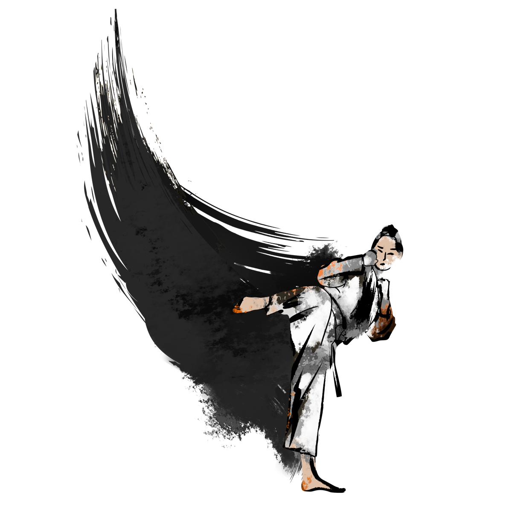
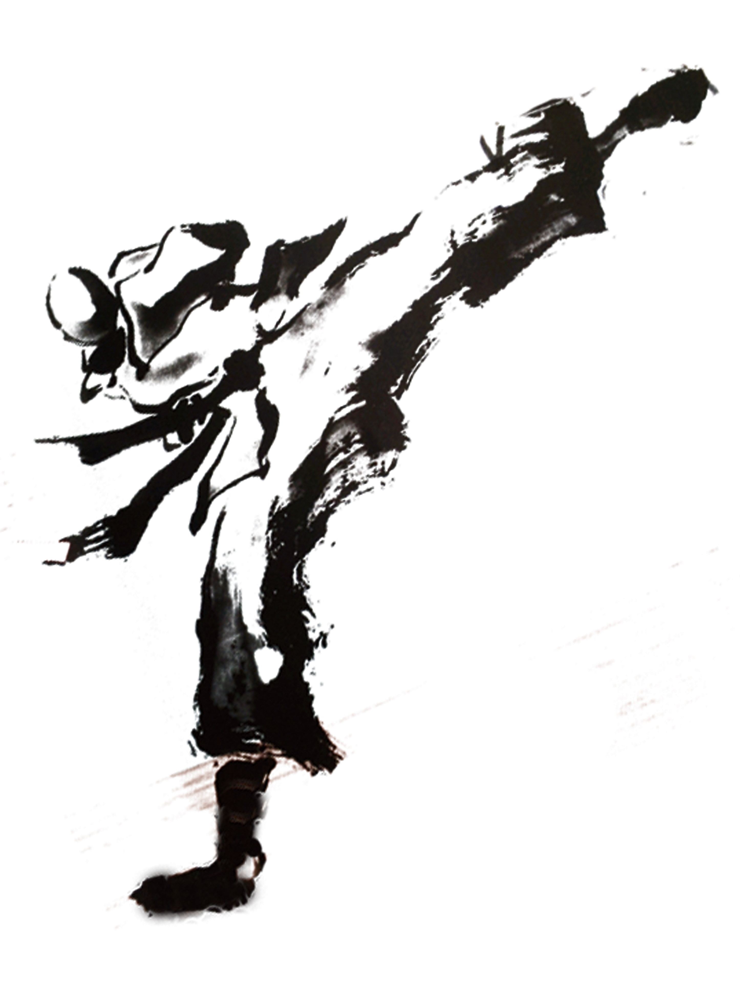

Escuela "nombre de la escuela" de Taekwondo
Bienvenidos...!!!

Te damos la bienvenida a nuestra comunidad, un espacio dedicado al arte marcial coreano del Taekwondo, donde el respeto, la disciplina y la superación personal son nuestros pilares fundamentales.
Ya seas principiante, estudiante avanzado o simplemente tengas curiosidad por este camino, aquí encontrarás un lugar para crecer, aprender y entrenar cuerpo y mente.
Nuestra escuela ofrece clases para todas las edades, entrenamientos técnicos, preparación para competencias y mucho más, siempre guiados por instructores comprometidos y con amplia experiencia.
Explorá nuestro sitio para conocer nuestras clases, horarios, filosofía de enseñanza y las actividades que realizamos.
¡Gracias por visitarnos y ser parte de esta pasión que nos une!

Significado de Taekwondo
La palabra taekwondo proviene de los caracteres chinos 跆拳道 que significan:
跆 (tae, 태): técnicas que impliquen el uso de los pies. (pie).
拳 (kwon, 권): técnicas que impliquen el uso de los brazos (puño).
道 (do, 도): camino de perfeccionamiento. Concepto filosófico oriental, conocido también como dao o tao en chino y como dō en japonés. (Camino)
En Coreano seria:
tae,
kwon,
do,
Por tanto, la palabra taekwondo podría traducirse como «el camino del puño y la patada», lo cual hace referencia a que es un arte marcial que utiliza únicamente los pies, las manos y otras partes del cuerpo (como por ejemplo: las rodillas y los codos), prescindiendo por completo del uso de armas, tanto tradicionales como modernas.
La filosofía del Taekwondo
La filosofía del Taekwondo se basa en cinco principios derivados de las filosofías chinas del confucionismo, y el taoísmo; influenciadas en gran parte por el inmenso nacionalismo coreano; estos principios son: cortesía, integridad, perseverancia, autocontrol y espíritu indomable. Además, los valores de Amor fraternal, y Ciencia son parte de en la formación infantil.
Cortesía (Ye Ui)
Es un principio fundamental dentro y fuera del Taekwondo, que tiene como objetivo hacer destacar al ser humano manteniendo una sociedad armoniosa. Los practicantes de Taekwondo deben construir un carácter noble, así como entrenar de una manera ordenada y disciplinada.
Integridad moral (Yom Chi)
Es muy importante saber establecer los límites entre lo bueno y lo malo así como saber reconocer cuando se ha hecho algo malo y redimirse por ello. Por ejemplo, en un estudiante que se niega a recibir consejo o aprender de otro estudiante más experto, o en un practicante que pide un grado no merecido a su maestro no hay integridad.
Perseverancia (In Nae)
La felicidad o la prosperidad suelen ser alcanzadas por la persona que es paciente. Para poder alcanzar un objetivo, ya sea promocionar a un grado superior o perfeccionar una técnica, se ha de ser perseverante. Es fundamental el sobrepasar cada dificultad con la perseverancia.
Autocontrol (Guk Gi)
El autocontrol es de vital importancia tanto dentro como fuera del dojang, tanto en el combate como en los asuntos personales. Un buen practicante de Taekwondo no permitirá que la ira, la tristeza o el miedo dominen su accionar. En combate, la falta de autocontrol puede provocar graves consecuencias tanto para el alumno como para su oponente. Asimismo, se ha de ser capaz de vivir y trabajar dentro de las propias capacidades. Cabe destacar que el alumno no puede ser agresivo dentro o fuera del gimnasio, ni llevar una vida descontrolada (alcohol, drogas...)
Espíritu indomable (Baekjul Boolgool)
Un buen practicante de Taekwondo ha de ser siempre justo, de libre pensamiento, modesto y honrado, sin permitir que corrompan sus valores, sin permitir que sus pensamientos y pasiones sean sometidos por terceros, sin someter a otros, ni inculcarles ideas equívocas o negativas. Mantendrá la confianza en sí mismo. Ante una injusticia, actuará con espíritu combativo, sin miedo, sin dudarlo y sin evitar la confrontación por causa de quién o quienes se haya de enfrentar cuando dicha confrontación sea necesaria.